방송통신산업기사 (2010-03-14 기출문제)
1과목: 디지털 전자회로
1. 음성 신호(0~4[kHz])를 반송파 신호 y(t)=5cos(6.28×105t)로 DSB-LC(DSB-TC) 변조하는 경우 상측파대(USB)가 차지하는 주파수 범위로서 옳은 것은 다음 중 어느 것인가? (단, 음성 신호의 최대 진폭은 반송파 진폭보다 적음)
- 100~104[kHz]
- 100~108[kHz]
- 96~100[kHz]
- 92~100[kHz]
(정답률: 70%)

2. 다음 그림과 같은 논리회로는 어떤 기능을 수행하는가?
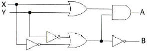
- 일치회로
- 반가산기
- 전가산기
- 반감산기
(정답률: 알수없음)
3. 기본적으로 PSK 복조 방식은 동기식만을 지원하므로 이를 개선하여 비동기식 복조가 가능한 PSK 방식은 다음 중 어느 것인가?
- DPSK
- QPSK
- OQPSK
- OCQPSK
(정답률: 39%)
4. 다음 회로에 대하여 입력신호 Vi=5sin(ωt)일 때 출력파형은? (제너다이오드의 순방향 전압은 0.7[V]이고 제너전압은 4.7[V]이다.)
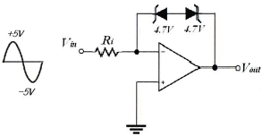
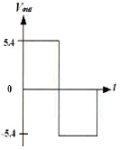
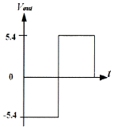
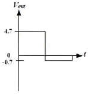
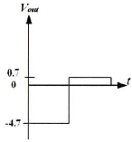
(정답률: 73%)
5. 입력으로 2n개의 데이터를 가지며 이를 선택하기 위한 스트로브 제어신호가 n개를 가지고 입력 데이터 중 1개를 선택하는 기능을 갖는 논리회로를 다음 중 무엇이라고 하는가?
- 디멀티플렉서
- 디코더
- 엔코더
- 멀티플렉서
(정답률: 54%)
6. R-L 직렬 회로에서 시정수(time constant) τ는 다음 중 어떻게 정의되는가?
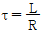
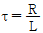
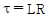
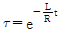
(정답률: 알수없음)
7. 다음 그림과 같은 논리회로의 기능은 다음 중 어느것인가?
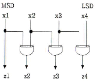
- Gray to BCD 부호 변환기
- BCD to 7421 부호 변환기
- BCD to 3초과 부호 변환기
- BCD to Gray 부호 변화기
(정답률: 알수없음)
8. 2진수 1001을 그레이 부호(Gray Code)로 바르게 변환한 것은 다음 중 어느 것인가?
- 0110
- 1101
- 1111
- 1010
(정답률: 알수없음)
9. 8진수 35를 10진수로 변환하면 다음 중 얼마가 되는가?
- 5
- 11
- 22
- 29
(정답률: 알수없음)
10. 디지털 IC의 정상 동작에 영향을 주지 않고 게이트 출력부에 연결할 수 있는 표준 부하의 숫자를 무엇이라고 하는가?
- 팬 아웃
- 틸트
- 잡음 허용치
- 전달지연 시간
(정답률: 58%)
11. 다음 그림의 궤환회로에서 D=1+βGm는? (여기서 Gm은 회로에서 궤환이 없을 때 전달 컨덕턴스
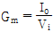
이다.)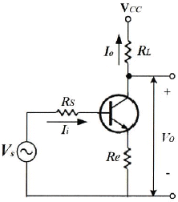
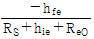
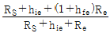
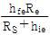
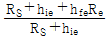
(정답률: 50%)
12. C급 전력증폭기에 대한 설명으로 틀린 것은?
- 트랜지스터는 입력 교류신호의 짧은 기간 동안만 도통되고 대부분의 시간 동안에는 차단상태에 있게 된다.
- 베이스-에미터 전압으로 크로스오버(Crossover) 왜곡이 나타난다.
- 출력파형이 심하게 왜곡되므로 고조파 동조 증폭기에 응용된다.
- A급이나 푸쉬풀 B급 전력증폭기보다 전력효율이 더 높다.
(정답률: 알수없음)
13. 입력되는 신호 파형에서 급격히 변화하는 부분을 강조하거나 구형파에서 spike 파를 얻기 위해 사용되는 회로는 다음 중 어느 것인가?
- 적분 회로
- 미분 회로
- 클램핑 회로
- 리미터 회로
(정답률: 42%)
14. 발진기에서 구현할 수 있는 파가 아닌 것은?
- 사인파(sine wave)
- 구형파(rectangular wave)
- 충격파(impulse wave)
- 삼각파(triangle wave)
(정답률: 74%)
15. 반파정류기의 직류출력 전압이 20[V]일 때 맥동전압의 rms 값은?
- 24.2[V]
- 20.0[V]
- 9.6[V]
- 7.7[V]
(정답률: 28%)
16. 제너 다이오드에서 불순물의 도핑 레벨을 높게 했을 때 나타나는 현상으로 틀린 것은?
- 역방향 제너전압이 감소한다.
- 매우 좁은 공핍층이 형성된다.
- 강한 전계가 공핍층 내부에 존재하게 된다.
- 역방향 제너저항이 감소한다.
(정답률: 알수없음)
17. 다음과 같은 논리 함수를 구현할 때, 최소의 게이트를 사용할 수 있도록 단순화시킨 것은 다음중 어느 것인가?
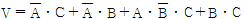
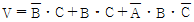
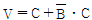
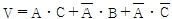
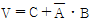
(정답률: 알수없음)
18. 전원공급기를 처음 켰을 때 발생할 수 있는 서지전류에 의한 다이오드의 손상을 막을 수 있는 방법으로 가장 적합한 것은?
- 여러 개의 다이오드를 병렬로 연결하고 이들 각 다이오드와 직렬로 낮은 값의 저항을 연결한다.
- 회로에서 다이오드가 사용되는 곳이면 병렬로 여러 개의 다이오드를 연결한다.
- 여러 개의 다이오드를 병렬로 연결하고 이들 각 다이오드와 직렬로 낮은 값의 커패시터를 연결한다.
- 변압기의 1차측에 퓨즈를 직렬로 연결한다.
(정답률: 67%)
19. 다음 그림은 윈 브리지 발진기의 블록도이다. 발진하기 위한 저항 R2의 값은?
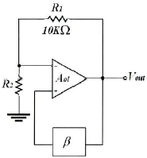
- 5[kΩ]
- 10[kΩ]
- 20[kΩ]
- 30[kΩ]
(정답률: 75%)
20. 그림의 회로를 트랜지스터의 근사 소신호 등가회로로 해석했을 때 설명으로 틀린 것은? (여기서 Ri는 RS를 포함한 입력저항이다.)
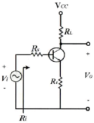
- 전류이득은 (1+hfe)Re 이다.
- 입력저항은 RS+hie+(1+hfe)Re 이다.
- 전압이득은
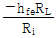
이다. - 공통 에미터 증폭회로이다.
(정답률: 알수없음)
2과목: 방송통신 기기
21. NTSC 방송 방식 휘도신호 Y는 0.3R과 0.59G 그리고 얼마의 B가 필요한가?
- 0.11
- 0.22
- 0.33
- 0.44
(정답률: 알수없음)
22. 다음 중 TV 동기신호 발생기의 신호 종류가 아닌 것은?
- 수평 구동신호
- 수직 구동신호
- 휘도 구동신호
- 부반송파 신호
(정답률: 85%)
23. 다음 CATV 구성 부분 중 Head-End계에서 송출된 신호를 가입자 단말기기까지 전송해주는 통로로서 트렁크라인, 분배기 등으로 구성된 계통은?
- Head-End 계
- 전송로계
- 단말계
- 방송국 운영체제
(정답률: 알수없음)
24. 초단파(VHF)의 주요 용도가 아닌 것은?
- 선박, 항공기 통신
- TV 방송
- FM 라디오 방송
- 육상 이동 통신
(정답률: 알수없음)
25. 디지털 영상신호 중 HDTV 스튜디오 규격으로 색차 신호의 표본화 주파수는 무엇인가?
- 6.75[MHz]
- 13.5[MHz]
- 37.125[MHz]
- 74.25[MHz]
(정답률: 알수없음)
26. TV 동기 신호에 대한 다음 설명 중 틀린 것은?
- 수평동기 신호와 수직동기 신호가 있다.
- 수평동기 신호 주파수는 15.75[kHz]이다.
- 수평동기 신호는 각 수평 주사 라인의 수평귀선 소거 기간 내에 삽입된다.
- 수직동기 신호는 수직귀선 소거기간(VBI)에 삽입되며 1H 간격 펄스로 3H 기간동안 지속된다.
(정답률: 80%)
27. 다음 중 FM 방송 송ㆍ수신기 구성 요소의 관계가 잘못된 것은?
- FM 방송 송신기 - 프리엠퍼시스 회로 - HPF - 미분기
- FM 방송 송신기 - 디엠퍼시스 회로 - LPF - 적분기
- FM 방송 송신기 - 주파수체배기 - C급 증폭기
- FM 방송 송신기 - FM 변조기 - 평형변조기
(정답률: 42%)
28. 다음 중 TV 방송프로그램을 안내해주는 역할을 하는 것은?
- EPG
- CAS
- PPV
- NVOD
(정답률: 알수없음)
29. 디지털 위성수신기에 사용되는 방식은 유럽의 DVB 방식으로서 디지털 변조는 QPSK 변조방식을 사용한다. QPSK 방식의 이론적 대역폭 효율은 다음 중 어느 것인가?
- 1[bit/s/Hz]
- 2[bit/s/Hz]
- 3[bit/s/Hz]
- 4[bit/s/Hz]
(정답률: 알수없음)
30. 우리나라의 지상파 디지털 방송 중 HDTV의 특징이 아닌 것은?
- 주사선수가 525라인에서 1125라인으로 늘어났다.
- 화면의 비율이 4:3에서 16:9로 가로로 넓어졌다.
- 대역폭이 6[MHz]에서 8[MHz]로 넓어졌다.
- 5.1채널의 고품질 음향이 제공된다.
(정답률: 알수없음)
31. 다음 중 SD급 디지털 텔레비전에서 후도신호의 샘플링 주파수는?
- 2.25[MHz]
- 5[MHz]
- 6.75[MHz]
- 13.5[MHz]
(정답률: 75%)
32. 다음 중 현장의 중계차와 연주소간을 연결하는 회선을 무엇이라 하는가?
- 위성회선
- FPU
- STL
- M/W
(정답률: 67%)
33. 프레임 주파수가 30[Hz]인 NTSC TV 방식에서 수평주파수는?
- 15,750[Hz]
- 12,250[Hz]
- 725[Hz]
- 525[Hz]
(정답률: 93%)
34. AM 방송의 특징으로 옳지 않은 것은?
- 피변조파의 대역폭이 좁다.
- 피변조파 전력이 적다.
- 변복조 회로가 비교적 간단하다.
- 전송로의 진폭 잡음에 강하다.
(정답률: 82%)
35. 다음 중 웨이브폼 모니터의 설명으로 맞는 것은?
- 색도성분을 측정하기 위한 측정이다.
- 신호의 위상과 진폭을 브라운관에 벡터도로 표시한다.
- 각종 신호의 주파수성분을 모니터에 표시한다.
- TV 신호와 파형을 측정하는 오실로스코프이다.
(정답률: 40%)
36. 디지털 위성방송 수신시스템의 구성요소 중 손실을 작게하기 위하여 저주파수로 변환하는 장치는?
- LNB
- LNA
- BPF
- OSC
(정답률: 70%)
37. 다음 중 아날로그 TV 방송을 하는 방송국에서 갖추어야 할 필수적인 장비가 아닌 것은?
- TV 신호 발생기
- 파형 분석기
- 벡터스코프
- 비트에러 측정기
(정답률: 80%)
38. 위성방송에서 Ku-Band에서의 주파수가 맞는 것은?
- Up-Link: 12[GHz], Down-Link: 14[GHz]
- Up-Link: 15[GHz], Down-Link: 12[GHz]
- Up-Link: 14[GHz], Down-Link: 12[GHz]
- Up-Link: 12[GHz], Down-Link: 15[GHz]
(정답률: 77%)
39. 영상채널의 주파수 대역폭을 측정하고자 한다. 필요한 계측기는?
- 대역통과 필터
- 주파수 카운터
- 오실로스코프
- 스펙트럼 아날라이져
(정답률: 82%)
40. 벡터스코프에서 컬러버스트를 기준으로 시계방향으로 120도 이동하면 무슨 색상이 되는가?
- 적색
- 마젠타
- 청색
- 시안
(정답률: 82%)
3과목: 방송미디어 개론
41. 다음 중 집적 회로에 의해서 구성된 촬상 소자는?
- 플럼비콘
- CCD
- 세티콘
- 아이코너 스코프
(정답률: 80%)
42. CATV 방송망에서 비디오, 데이터 및 음성 등과 같은 광대역 콘텐츠를 운송하기 위해 네트웍의 서로 다른 부분에서 광섬유 케이블과 동축케이블이 혼합되어 사용되는 것은?
- LAN
- HFC
- FTTH
- WLL
(정답률: 알수없음)
43. 통계적인 부호화 방법으로 빈번히 발생하는 데이터 코드일수록 적은 수의 비트로 표현하여 전체 데이터의 크기를 줄이는 방식은?
- Run Length 부호화
- Huffman 부호화
- Trellis 부호화
- Lempel-Ziv 부호화
(정답률: 알수없음)
44. 영상압축의 주요 적용 기술 중 화면과 화면 사이의 움직임도 장면전환을 제외하면 같은 장면에서는 급격히 변화하지 않아 많은 상관성이 존재한다. 이를 무엇이라 하는가?
- 가변 부호화
- 양자화성
- 시간적 중복성
- 공간적 중복성
(정답률: 80%)
45. 영문 코드를 표현하는 ASCII 방식으로 표현 가능한 코드의 수는?
- 32
- 64
- 128
- 256
(정답률: 90%)
46. 전송방식에서 한쪽에서 송신할 때는 상대방은 수신만 해야 하고, 한쪽에서 수신 상태로 해야 상대쪽에서 송신할 수 있는 방식은?
- Simplex
- Full Duplex
- Half Duplex
- Multiplex
(정답률: 85%)
47. 우리나라 DTV 전송표준의 오디오 압축 방식과 샘플링 주파수를 바르게 연결한 것은?
- MPEG-2 AAC, 44.1[kHz]
- AC-3, 44.1[kHz]
- MPEG-2 AAC, 48[kHz]
- AC-3, 48[kHz]
(정답률: 알수없음)
48. 다음 방송ㆍ통신망으로 사용되는 광케이블의 특징이 아닌 것은?
- 전자기적 잡음의 영향이 적다.
- 임피던스는 75[Ω]을 사용한다.
- 네트워크의 보안성이 크다.
- 전송 대역폭이 넓다.
(정답률: 82%)
49. 다음 영상 압축 기법 중 화상의 픽셀 정보를 주파수 성분으로 변환하는 기법으로 적절한 것은?
- subsampling
- DCT
- delta frame
- motion estimation
(정답률: 알수없음)
50. 휴대전화단말기에서 글자 위주의 단문 메시지 서비스에서 발전하여 사진, 소리, 동영상 등의 멀티미디어 메시지를 만들어 보내는 방식을 의미하는 것은?
- MMS
- SMS
- RTF
- EMS
(정답률: 82%)
51. 소리의 세기를 표시하는 단위로 데시벨(decibel, dB)을 일반적으로 사용한다. 다음 중 사람이 들을 수 있는 가장 작은 소리로서 최소 가청값은 몇 [dB] 인가?
- 0[dB]
- 3[dB]
- 10[dB]
- 74[dB]
(정답률: 59%)
52. 인터넷에서 영상이나 음성 등의 파일을 다운로드 없이 실시간으로 재생해주는 기법은?
- pushing
- caching
- logging
- streaming
(정답률: 75%)
53. 우리나라 디지털 케이블 방송의 데이터방송 표준규격은?
- DVB-MHP(Multimedia Home Platform)
- ACAP(Advanced Common Application Platform)
- OCAP(Open Cable Application Platform)
- MHW(Media High Way)
(정답률: 알수없음)
54. 우리나라 NTSC TV 방식에 사용되는 음성다중 방식은?
- 2캐리어 방식
- 칸 방식
- 마그나복스 방식
- 벨러 방식
(정답률: 알수없음)
55. 통신위성(Communication Satellite)이 사용하는 주파수 범위는?
- 30-300[MHz]
- 3-30[GHz]
- 3-30[MHz]
- 30-300[MHz]
(정답률: 55%)
56. 사건 현장에서 방송사로 실황을 중계하려 한다. 다음 중 가장 현장감이 있고 빠른 중계 방식은?
- 마이크로웨이브나 SNG를 사용한 직접 중계방식
- 중계차 녹화 중계방식
- ENG 카메라 녹화 중계방식
- STIL 사진 중계방식
(정답률: 70%)
57. IPTV에 사용되는 동영상 압축기술은 매크로 블록 예측방법이 평탄한 영상에서는 16×16의 큰 단위 매크로 블록 예측부호화로 처리하나 복잡한 영상에서는 ( )로 처리한다. ( )안에 맞는 것은?
- 8×16
- 8×8
- 4×8
- 4×4
(정답률: 알수없음)
58. 텔레비전 수신기에서 2차원의 화상을 1차원의 전기적인 신호로 전송하기 위해 2차원 화상을 1차원적인 화상으로 재배열하는 것은?
- 변조
- 주사
- 복조
- 편이
(정답률: 67%)
59. 디지털 CATV 운영업체와 개인 또는 회사의 컴퓨터나 TV 셋탑(Set-Top) 간의 데이터 입출력을 처리하는 장치인 케이블 모뎀의 표준 인터페이스를 의미하는 용어는?
- PSIP
- EPG
- SCSI
- DOCSIS
(정답률: 알수없음)
60. CATV 방송 시스템의 기본 구성에서 지상파 텔레비전 방송이나 위성 텔레비전 방송 프로그램을 수신하고 채널 등을 변환하여 동축케이블 또는 광케이블로 송출하거나 CATV 방송 사업자가 자체적으로 제작한 프로그램이나 프로그램 공급업자로부터 공급받은 프로그램을 케이블로 송출하는 설비는?
- 분배망
- 헤드엔드
- 서비스 전송로
- 가입자 단말장치
(정답률: 70%)
4과목: 전자계산기 일반 및 방송설비기준
61. 공사의 사용전 검사에서 대통령령으로 정하는 공사가 아닌 것은?
- 구내통신 선로공사
- 이동통신 구내선로공사
- 종합유선방송 전송선로공사
- 무선가입자 망설비공사
(정답률: 80%)
62. 소프트웨어의 SDLC(소프트웨어 개발생명주기)로 맞는 것은?
- 요구분석 - 구현 - 설계 - 테스트 - 유지보수
- 유지보수 - 설계 - 구현 - 테스트 - 요구분석
- 요구분석 - 설계 - 구현 - 테스트 - 유지보수
- 테스트 - 설계 - 구현 - 요구분석 - 유지보수
(정답률: 알수없음)
63. 국제전기통신연합(ITU)에서 정의하고 있는 스펙트럼 규제가 아닌 것은?
- 할당(allocation)
- 분배(allotment)
- 배정(assignment)
- 간섭(interference)
(정답률: 알수없음)
64. 국내 방송의 허가 및 기술규격에 관련되는 업무를 수행하는 기관은?
- 문화체육관광부
- 교육과학기술부
- 지식경제부
- 방송통신위원회
(정답률: 90%)
65. 방송법에서 정하는 업무정지 기간으로 맞지 않는 것은?
- 2개월
- 3개월
- 6개월
- 9개월
(정답률: 67%)
66. 필요한 하드웨어 레지스터를 설정함으로써 프로세서에게 CPU를 할당하고 문맥교환을 하는 프로세서의 기능은?
- 트래픽 제어기(Traffic Controller)
- 입출력 스케줄러(I/O Scheduler)
- 프로세서 스케줄러(Processor Scheduler)
- 디스패처(Dispatcher)
(정답률: 37%)
67. 정보통신 공사업법의 방송설비공사에서 방송국설비공사가 아닌 것은?
- 영상ㆍ음향설비
- 송출설비
- 송수신설비
- 방송관리시스템설비
(정답률: 알수없음)
68. 10진수 23을 2진수로 변환하라?
- 11101
- 10111
- 10101
- 11011
(정답률: 알수없음)
69. 컴퓨터 시스템의 내부는 여러 가지 부속 시스템들이 서로 연결되어야 한다. 예를 들어 메모리와 프로세서, 또 프로세서와 입출력장치들이 연결되어 정보를 주고받을 수 있어야 한다. 이것을 무엇이라고 하는가?
- 주기억 장치
- 입출력 버스
- 제어기
- 보조기억 장치
(정답률: 70%)
70. 병렬처리 시스템의 특징에 해당되지 않은 것은?
- 병렬처리는 다수의 프로세서들이 여러 개의 프로그램들 또는 한 프로그램의 분할된 부분들을 분담하여 동시에 처리하는 기술이다.
- 컴퓨터 시스템의 계산속도 향상이 목적이다.
- 시스템의 비용 증가가 없고 별도로 하드웨어가 필요하지 않는다.
- 분할된 부분들을 병렬로 처리한 결과가 전체 프로그램을 순차적으로 처리할 경우와 동일한 결과를 얻을 수 있다.
(정답률: 75%)
71. Unix에서 두 프로세스를 연결하여 프로세스 간 통신을 가능하게 하며, 한 프로세스의 출력이 다른 프로세스의 입력으로 사용됨으로써 프로세스간 정보 교환이 가능하도록 하는 것은?
- 파이프(Pipe)
- 시그널(Signal)
- 포크(Fork)
- 선점(Preemption)
(정답률: 93%)
72. CPU의 3요소가 아닌 것은?
- Output Unit
- Register
- ALU(Arithmetic Logic Unit)
- Control Unit
(정답률: 59%)
73. 방송사업자의 재허가, 재승인시 심사사항이 아닌 것은?
- 방송통신위원회의 방송평가
- 지역사회발전에 이바지한 정도
- 시청자위원회의 방송프로그램 평가
- 방송중지명령에 대한 이행 사례
(정답률: 19%)
74. 아날로그 지상파 텔레비전방송 신호처리기에서 입력임피던스와 출력임피던스가 알맞은 것은?
- 입력 55[Ω], 출력 75[Ω]
- 입력 75[Ω], 출력 55[Ω]
- 입력 55[Ω], 출력 55[Ω]
- 입력 75[Ω], 출력 75[Ω]
(정답률: 알수없음)
75. 다음은 수신안테나의 설치방법이다. ( )의 정답은?
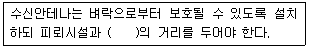
- 1미터 이상
- 2미터 이상
- 3미터 이상
- 4미터 이상
(정답률: 50%)
76. 수치 데이터의 표현방식에 대한 설명 중 틀린 것은?
- 수치 데이터를 표현할 때는 부호, 크기, 소수점 등으로 표시하는데 소수점은 고정소수점 표현방식과 부동소수점 표현방식이 있다.
- 고정소수점 방식에서 정수는 소수점이 수의 맨 왼쪽 끝에 있다고 가정한 것이다.
- 소수점의 위치가 어느 한곳에 고정되어 있는 것을 의미하는 것을 고정소수점 방식이라 한다.
- 고정소수점 방식은 주로 정수로 표현하는데 사용되며, 정수표현은 2진수 고정소수점 방식과 10진수 고정소수점 방식의 2가지로 구분한다.
(정답률: 알수없음)
77. 인터럽트 방식 중에 소프트웨어에 의해 주변장치들을 하나씩 조사하여 인터럽트를 요청한 장치를 찾아내어 그 장치에 해당하는 인터럽트 서비스를 수행하는 것을 무엇이하 하는가?
- priority encoder 방식
- Polling 방식
- daisy chain 방식
- encoder device 방식
(정답률: 알수없음)
78. 마이크로프로세서 병렬 처리에서 단계로써 맞는 것은 무엇인가?
- Fetch - Execute - decode - Write
- Execute - decode - Fetch - Write
- Fetch - decode - Execute - Write
- Fetch - decode - Write - Execute
(정답률: 62%)
79. 다음의 BCD 가산 456+111을 행하면?
- 0111 0110 0101
- 0001 0001 0111
- 0101 0111 0110
- 0101 0110 0111
(정답률: 60%)
80. 감리원의 업무범위에서 검토ㆍ확인 사항이 아닌것은?
- 공사계획 및 공정표의 검토ㆍ확인
- 설계변경에 관한 사항의 검토ㆍ확인
- 공사업자가 작성한 시공상세도면의 검토ㆍ확인
- 사용자재의 규격 및 적합성에 관한검토ㆍ확인
(정답률: 알수없음)